◆『「Lostbelt No.6」Pick Up召喚』期間◆
期間:2022年12月1日(四) 17:00～12月23日(五) 16:59
從「Road to 7 [Lostbelt No.6]」關聯從者之中，舉辦包含期間限定從者「★5(SSR)千子村正」「★5(SSR)美露莘(妖精騎士蘭斯洛特)」「★5(SSR)奧伯龍」6位從者Pick Up的3種召喚！
另外，只限已經通過第2部 第6章「Lostbelt No.6 妖精圓卓領域 阿瓦隆・勒菲 星辰誕生之刻」的情況，來自故事限定的概念禮裝「★4(SR)2018年のグロスター」Pick Up！
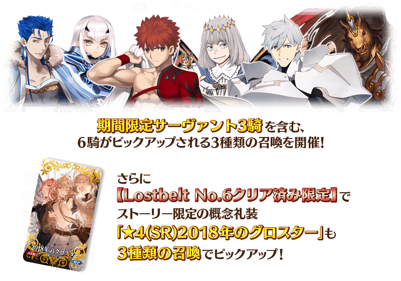
※本召喚中，故事限定的概念禮裝「★4(SR)2018年のグロスター」只限已經通過第2部 第6章「Lostbelt No.6 妖精圓卓領域 阿瓦隆・勒菲 星辰誕生之刻」的情況才會被抽出，成為Pick Up對象。
請注意尚未通過第2部 第6章「Lostbelt No.6 妖精圓卓領域 阿瓦隆・勒菲 星辰誕生之刻」」的情況會是Pick Up對象外，不會從本召喚被抽出。
※本召喚中概念禮裝「★4(SR)2018年のグロスター」做為抽出對象追加後，會變更其他★4(SR)概念禮裝個別的出現機率，但關於「★4(SR)概念禮裝全體的出現機率」不會變更。
詳情請自遊戲內的召喚詳細確認。
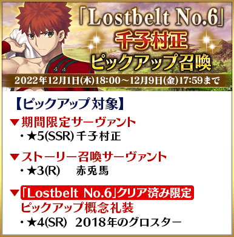
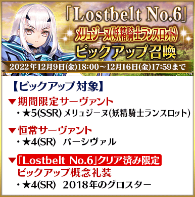
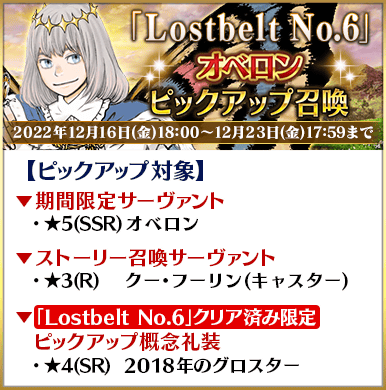
本召喚中，第2部 第6章「Lostbelt No.6 妖精圓卓領域 阿瓦隆・勒菲 星辰誕生之刻」的通過前與通過後，1日1次限定的「1次召喚」、「＋1次獎勵召喚」、「確定召喚」的計算及已經施行的「確定召喚」不會重置。
Pick Up期間中，Pick Up對象從者與概念禮裝的出現機率提升！
詳情請在聖晶石召喚畫面左下的召喚詳細確認。
11次召喚中確定1張★4(SR)以上和確定1位★3(R)以上的從者！ ※確定★4(SR)以上包含從者和概念禮裝。
◆『「Lostbelt No.6」Pick Up召喚』時間表◆
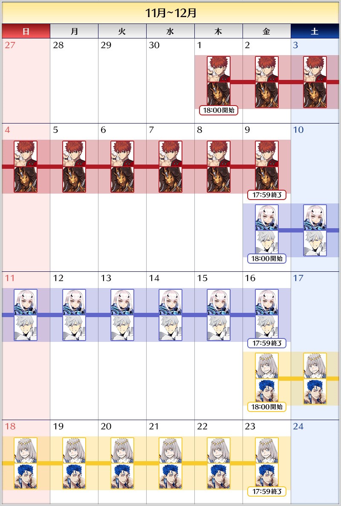
※請注意各召喚中獎勵召喚的計算是各自分別計算。 ※請注意各自的Pick Up召喚舉辦期間不同。 ※本召喚中，只有在各召喚Pick Up的從者才是透過「確定召喚」召喚的對象。
◆『「Lostbelt No.6」Pick Up召喚』的注意◆
本次的召喚是每個召喚內容做為個別召喚舉辦的設定。
每10次召喚進行的「＋1次獎勵召喚」與用有償聖晶石進行的1天1次限定「1次召喚」會變成每個召喚內容分別計算。
【重要】
◆關於「確定召喚」功能◆
・期間限定Pick Up召喚中，在329次以內未召喚到Pick Up對象★5(SSR)從者情況，只限1次可在進行第330次的召喚時「確定召喚」必定1位Pick Up對象★5(SSR)從者。
・在同時間舉辦多個期間限定Pick Up召喚的情況，各召喚分別(每個召喚畫面頁面)計算召喚次數。另外，以每日交替Pick Up召喚的內容切換情況，各自分別計算召喚次數。舉例，每天23:00時間點變更召喚內容的Pick Up召喚情況，請注意在召喚內容變更的時間點會重置召喚次數的計算。
・請注意期間限定Pick Up召喚中滿足以下任何條件的話，在召喚畫面會顯示「Pick Up對象確定召喚已結束。(ピックアップ対象の確定召喚は終了しました。)」，該召喚中「確定召喚」功能變成無效。
・第329次前召喚到Pick Up對象★5(SSR)從者
・在第330次確定召喚到Pick Up對象★5(SSR)從者
・召喚次數在期間限定Pick Up召喚中用有償聖晶石、無償聖晶石、呼符進行召喚時都會計算。目前的召喚履歴可於該召喚畫面內確認。
※每10次召喚進行的「＋1次獎勵召喚」與用有償聖晶石進行的1天1次限定「1次召喚」也在計算的對象。
※每個召喚內容會分開計算「＋1次獎勵召喚」與1日1次限定的「1次召喚」。請注意在變更召喚內容那天的23:00，「＋1次獎勵召喚」和「1次召喚」的計算會被重置。
※透過有償聖晶石1個「1次召喚」的計算，也會在每天3:00重置。
・在進行11次召喚時滿足「確定召喚」功能條件的情況，在施行11次召喚中會確定召喚1位Pick Up對象★5(SSR)從者。屆時，11次召喚中保障的確定1張★4(SR)以上與確定1位★3(R)以上的從者會另外生效。
・期間限定Pick Up召喚結束後，無法繼承召喚次數到別的召喚。
・故事召喚、友情點數召喚為「確定召喚」功能的對象外。
◆關於1天1次限定的有償聖晶石召喚◆
※可以1天1次限定於期間限定召喚用有償聖晶石1個進行「1次召喚」。
※透過有償聖晶石1個的「1次召喚」，每天3:00重置。
※透過有償聖晶石1個的「1次召喚」對應的聖晶石召喚有好幾個的情況，各個召喚中1天各進行1次有償聖晶石1個的「1次召喚」。
※請注意就算進行透過有償聖晶石1個的「1次召喚」，不包含在1次獎勵的計算。
※聖晶石購入時賦予的「附贈(オマケ)」是做為無償聖晶石而不包含在有償聖晶石的個數，請注意別搞錯。另外，持有聖晶石的細項，可從持有道具一覧確認。
◆關於透過召喚獲得從者硬幣◆
在期間限定召喚、故事召喚、友情點數召喚中入手從者時，可獲得該從者的從者硬幣。
◆有關從者的注意◆
※「★5(SSR)美露莘(妖精騎士蘭斯洛特)」的特定靈基再臨階段解放前，「變化後的寶具卡」的一部份立繪不會顯示。
※「★5(SSR)美露莘(妖精騎士蘭斯洛特)」的靈基再臨第3階段包含「Lostbelt No.6 妖精圓卓領域 阿瓦隆・勒菲 星辰誕生之刻」的劇透。敬請注意。
※請注意下述的從者只會從成為Pick Up對象的召喚被抽出。
・★5(SSR)千子村正
・★5(SSR)美露莘(妖精騎士蘭斯洛特)
・★5(SSR)奧伯龍
・★3(R)赤兔馬
・★3(R)庫・夫林(Caster)
※下述的從者在Pick Up期間結束後不會追加到故事召喚。
・★5(SSR)千子村正
・★5(SSR)美露莘(妖精騎士蘭斯洛特)
・★5(SSR)奧伯龍
※本召喚的Pick Up期間中，透過故事進行所追加的下述從者就算通過各章前也能入手。
・★3(R)赤兔馬
・★3(R)庫・夫林(Caster)
※下述的從者在Pick Up期間結束後仍會在故事召喚被抽出。
・★4(SR)帕西瓦爾
・★3(R)赤兔馬
・★3(R)庫・夫林(Caster)
◆有關從者真名的注意◆
※「★5(SSR)美露莘(妖精騎士蘭斯洛特)」是「妖精騎士蘭斯洛特」靈基再臨到第2階段後名稱變成「美露莘」。
◆有關概念禮裝的注意◆
※本召喚中，故事限定的概念禮裝「★4(SR)2018年のグロスター」只限已經通過第2部 第6章「Lostbelt No.6 妖精圓卓領域 阿瓦隆・勒菲 星辰誕生之刻」的情況才會被抽出，成為Pick Up對象。
請注意尚未通過第2部 第6章「Lostbelt No.6 妖精圓卓領域 阿瓦隆・勒菲 星辰誕生之刻」」的情況會是Pick Up對象外，不會從本召喚被抽出。
※本召喚中概念禮裝「★4(SR)2018年のグロスター」做為抽出對象追加後，會變更其他★4(SR)概念禮裝個別的出現機率，但關於「★4(SR)概念禮裝全體的出現機率」不會變更。
詳情請自遊戲內的召喚詳細確認。
期間限定從者
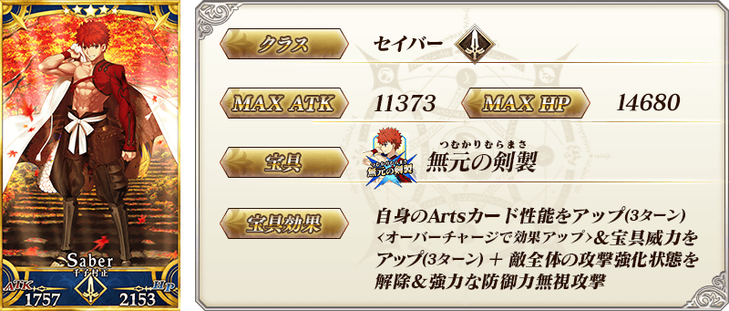
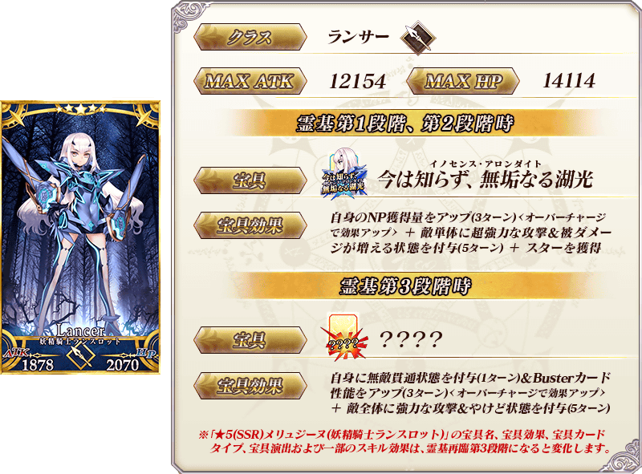 ※「★5(SSR)美露莘(妖精騎士蘭斯洛特)」，只限靈基再臨第1階段或第2階段的情況，在戰鬥中使用特定技能的話會變化成靈基再臨第3階段，可變化一部份技能的效果與寶具效果。另外，以技能效果變化成靈基再臨第3階段，在該場戰鬥中使用同様技能後不會返回第1・第2階段。 ※靈基再臨至第3階段後，想使用第1・第2階段時的寶具及技能的情況，於從者詳細畫面將戰鬥角色的設定變更成第1階段或第2階段才能使用。 ※特定靈基再臨階段開放前，「變化後的寶具卡」的一部份立繪不會顯示。 ※「★5(SSR)美露莘(妖精騎士蘭斯洛特)」是「妖精騎士蘭斯洛特」靈基再臨到第2階段後名稱變成「美露莘」。 ※「★5(SSR)美露莘(妖精騎士蘭斯洛特)」的靈基再臨第3階段包含「Lostbelt No.6 妖精圓卓領域 阿瓦隆・勒菲 星辰誕生之刻」的劇透。敬請注意。
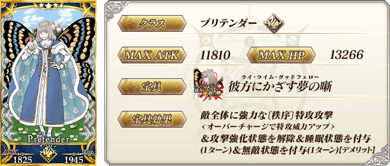
※「★5(SSR)奧伯龍」就算靈基再臨過卡面及戰鬥角色等也變化到第2階段為止。
想變化到第3階段以上的話必須通過『靈基解放關卡』。
※持有「★5(SSR)奧伯龍」的話，「★5(SSR)奧伯龍」的『靈基解放關卡』會登錄到「幕間物語」。
(只登錄到「幕間物語」，沒有文字冒險部份)
※「★5(SSR)奧伯龍」的『靈基解放關卡』在通過「Lostbelt No.6 妖精圓卓領域 阿瓦隆・勒菲 星辰誕生之刻」及「★5(SSR)奧伯龍」靈基再臨到第3階段後開放。
※通過「★5(SSR)奧伯龍」的『靈基解放關卡』後，在從者詳細畫面放大顯示卡面時，可鑑賞顯示最終再臨整體插圖的版本。
※請注意「★5(SSR)奧伯龍」的『靈基解放關卡』不計算在Extra(エクストラ)任務的「通過幕間物語〇個」。
故事召喚從者
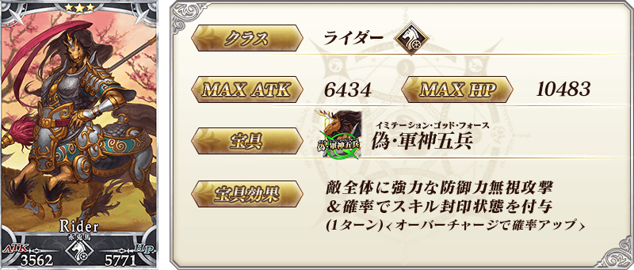 ※上述「★3(R)赤兔馬」的卡面為靈基再臨第1階段。
 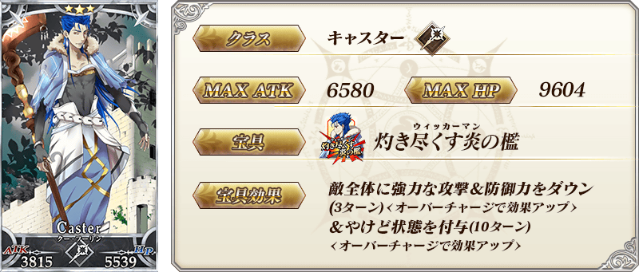
※上述「★3(R)庫・夫林(Caster)」的卡面為靈基再臨第1階段。
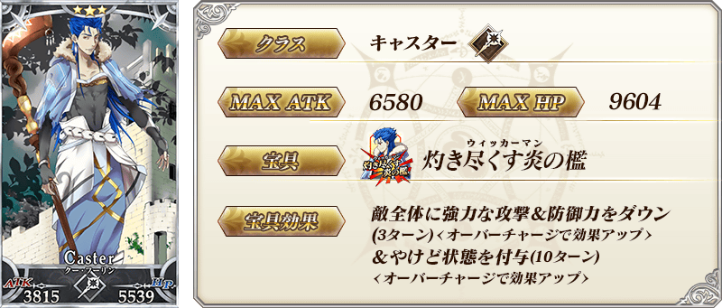
※上述「★3(R)庫・夫林(Caster)」的卡面為靈基再臨第1階段。
常駐從者
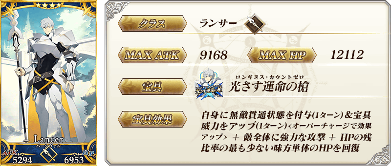 ※上述「★4(SR)帕西瓦爾」的卡面為靈基再臨第1階段。
| 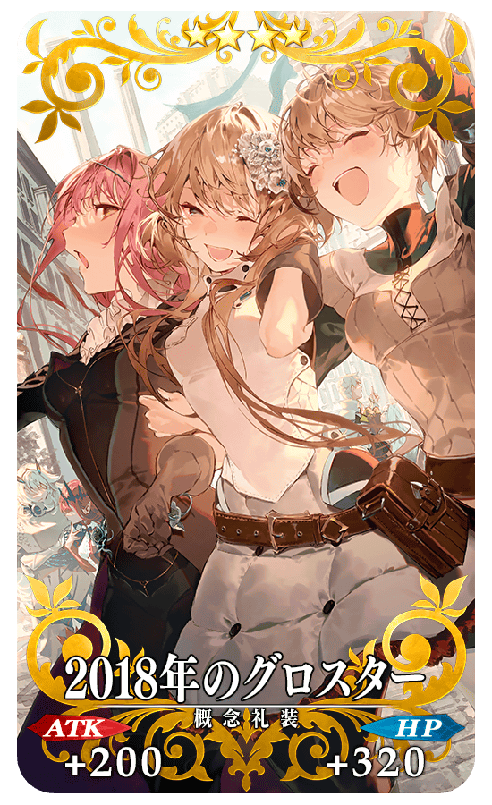 |
★★★★SR
◆最大解放時效果◆ |
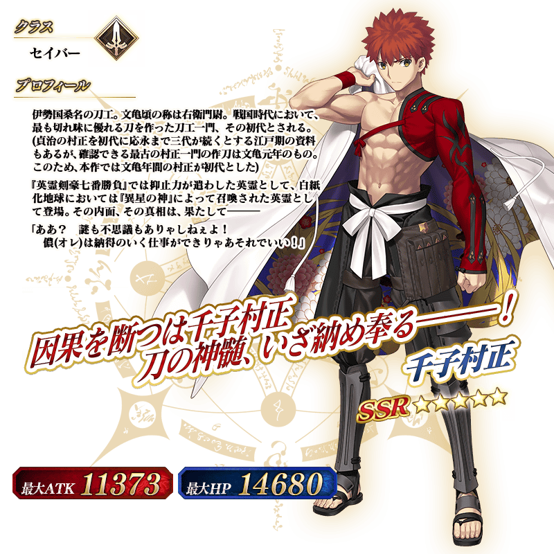
 ※「★5(SSR)美露莘(妖精騎士蘭斯洛特)」是「妖精騎士蘭斯洛特」靈基再臨到第2階段後名稱變成「美露莘」。
※「★5(SSR)美露莘(妖精騎士蘭斯洛特)」的靈基再臨第3階段包含「Lostbelt No.6 妖精圓卓領域 阿瓦隆・勒菲 星辰誕生之刻」的劇透。敬請注意。
※「★5(SSR)美露莘(妖精騎士蘭斯洛特)」是「妖精騎士蘭斯洛特」靈基再臨到第2階段後名稱變成「美露莘」。
※「★5(SSR)美露莘(妖精騎士蘭斯洛特)」的靈基再臨第3階段包含「Lostbelt No.6 妖精圓卓領域 阿瓦隆・勒菲 星辰誕生之刻」的劇透。敬請注意。
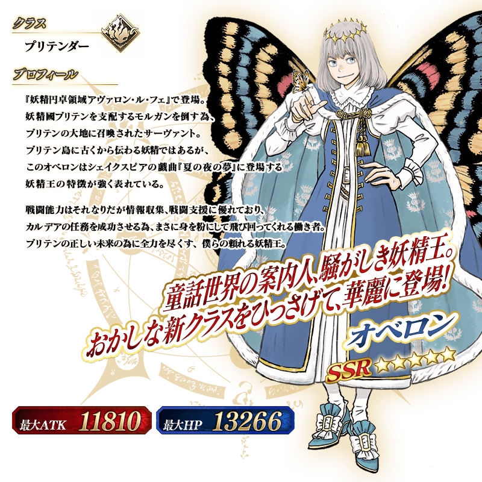
介紹在本召喚Pick Up的4位從者寶具演出！
※「★5(SSR)奧伯龍」在通過『靈基解放關卡』後，靈基再臨第3階段時的寶具的名稱與演出會變化。
【★5(SSR)千子村正】
【★5(SSR)美露莘(妖精騎士蘭斯洛特)】
【★5(SSR)奧伯龍】
【★4(SR)帕西瓦爾】
其他還有期間限定「Road to 7 [Lostbelt No.6]」的情報公開中！
關於詳情，請自下述橫幅確認。
■「Road to 7 [Lostbelt No.6]」詳細情報 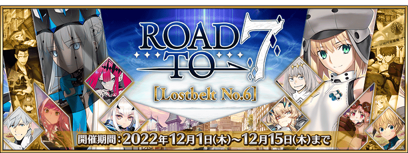